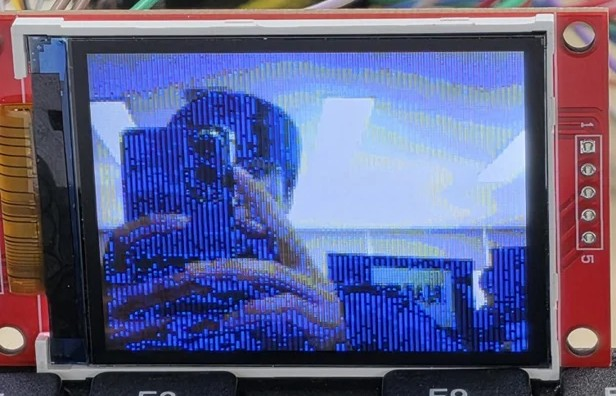
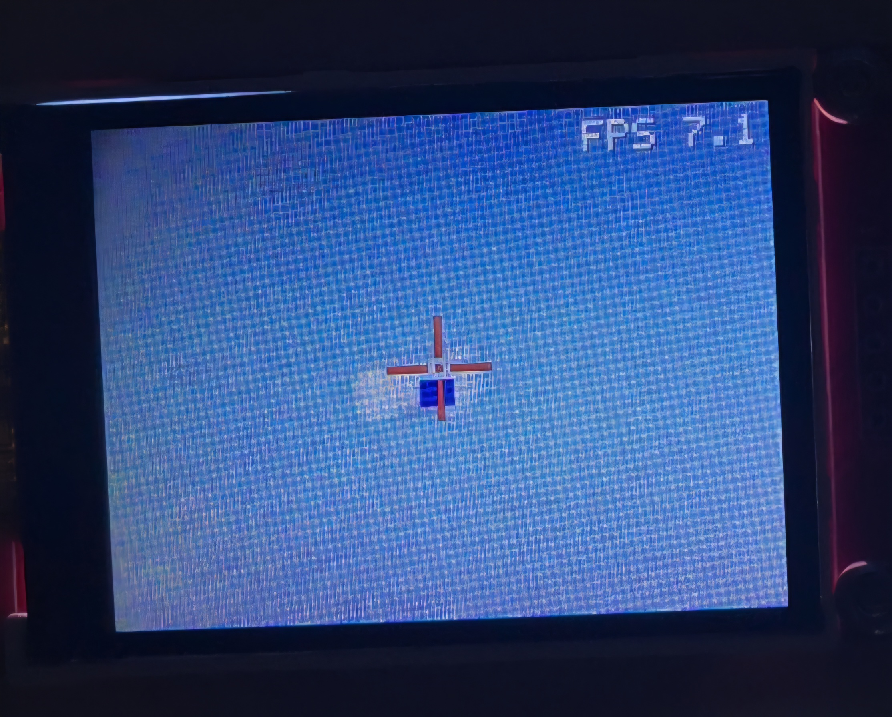

← 전체 프로젝트영상 입력에서 나타난 파란색 노이즈 Lock-On 상태를 표시한 보드 화면
03 - EMBEDDED AI - FREERTOS
AIMing Project
추적 기능 구현STM32H743 단일 보드에서 카메라 입력, AI 추론, Pan/Tilt 추적을 구현한 온디바이스 AI 시스템
MY ROLE카메라 및 AI 추론 연동, 추적 안정화, FSM 구현
확인 결과약 7 FPS 설정에서 보드 추론과 추적 흐름 확인


PROJECT OVERVIEW
목표와 구현
STM32H743 단일 보드에서 OV2640 카메라 입력, AI 추론, Pan/Tilt 추적과 출력 기능을 연결한 프로젝트입니다. FreeRTOS 태스크로 영상 처리와 제어 작업을 분리해 동작 흐름을 구성했습니다.
내가 구현한 일
- 오픈소스 OV2640 설정 코드를 통합하고 카메라 프레임을 팀원의 LCD 출력 형식에 맞게 변환
- Edge Impulse FOMO 모델의 보드 추론 경로를 연결하고 얼굴 인식 모델로 추론 연동 가능성 확인
- 추론 좌표의 흔들림에 EMA와 Miss Tolerance를 적용해 좌표 변동과 순간 검출 누락 완화
- Idle, Tracking, Lock-on FSM으로 추적 상태와 출력 흐름 구성
- 카메라 클럭을 조정해 약 7 FPS에서 14~15 FPS까지 시험했으나 청색 노이즈로 안정적인 약 7 FPS 설정을 선택
SYSTEM FLOW
시스템 구조
- 01OV2640 카메라
- 02FreeRTOS / 추론
- 03EMA와 상태 머신
- 04Pan/Tilt와 출력
협업 범위
AI 모델 학습, LCD 기본 코드, 서보 PID 제어는 팀원이 담당했습니다. 저는 카메라 입력, Edge Impulse 추론, LCD 출력, 추적 상태 로직을 STM32H743에서 연동했습니다.
구현 코드 확인PROBLEM SOLVING
문제 해결과 결과
문제와 접근
입력 FPS를 높이면 영상에 청색 노이즈가 생겼고, 추론 좌표가 흔들리거나 일시적으로 사라졌습니다. 배선과 접점을 점검했으나 고클럭 노이즈를 없애지 못해 기존 카메라 설정으로 돌아갔습니다. 추적 좌표에는 EMA와 Miss Tolerance를 적용했습니다.
확인 결과와 한계
안정적인 영상 입력, 추론, Pan/Tilt 추적 흐름을 실제 보드에서 확인했습니다.
고클럭 입력의 영상 노이즈는 해결하지 못해 약 7 FPS로 진행했습니다. 모델 학습과 서보 PID 제어는 제 담당 범위가 아닙니다.